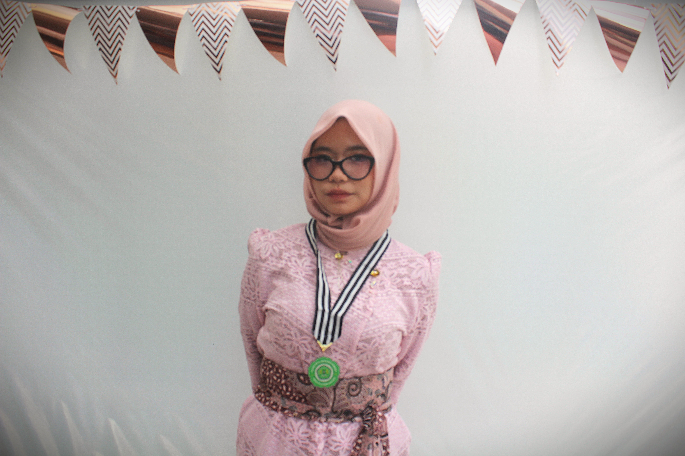
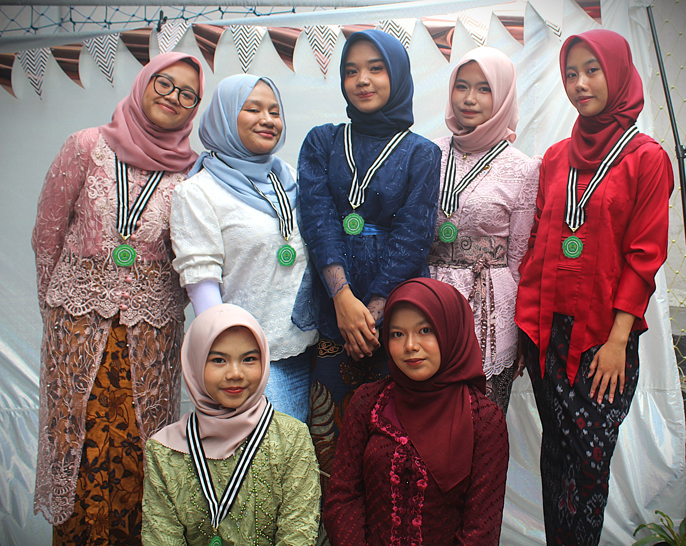
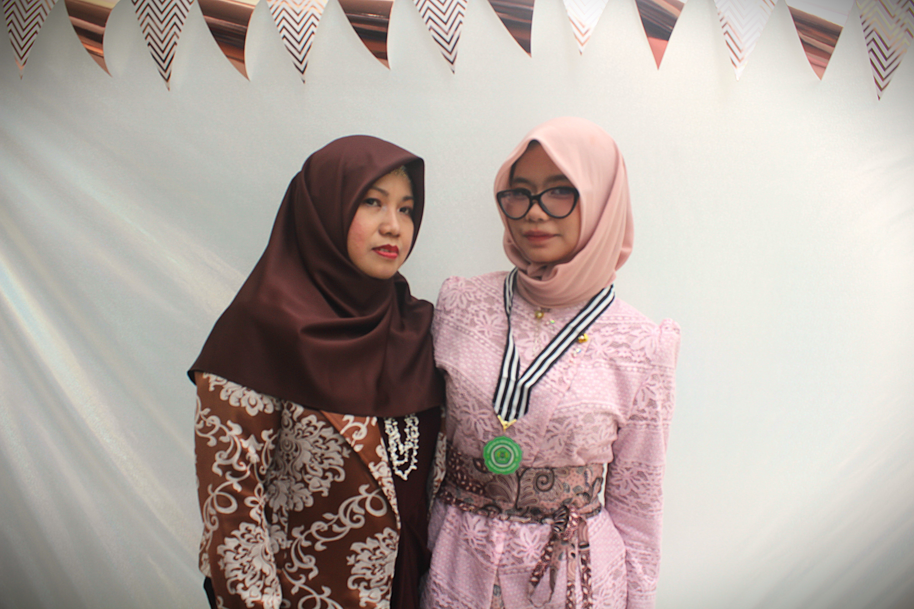
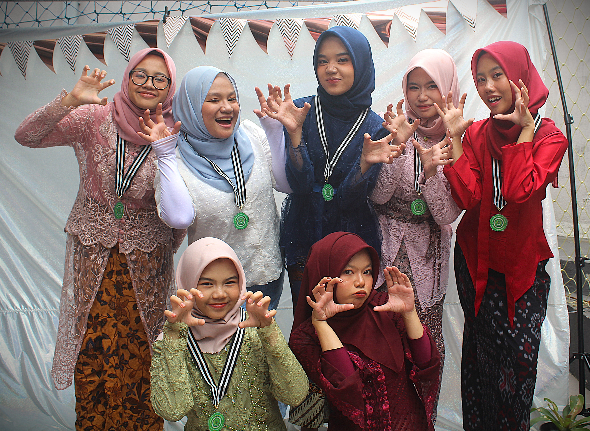
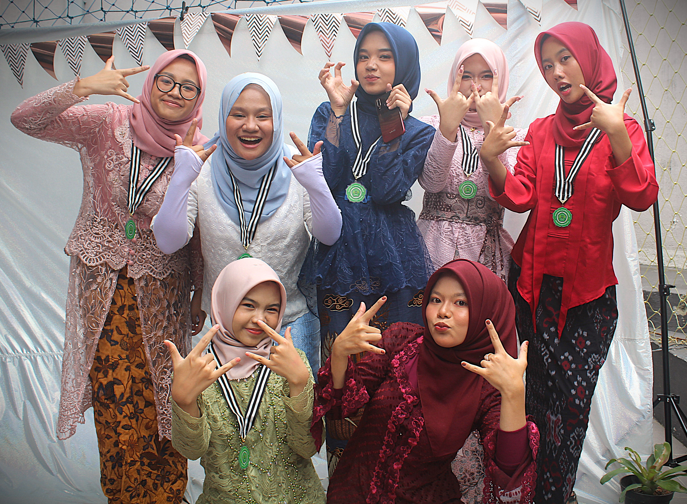

Selamat atas Kelulusannya!
Hai, Bilqis... atau boleh ya aku panggil “Bil” biar terasa lebih akrab.. hehe 😄
Selamat ya, akhirnya kamu sampai juga di garis akhir perjalanan SMA ini. Rasanya cepat banget, ya? Tiba-tiba semuanya sudah sampai di titik kelulusan.
Meski kita nggak terlalu sering berbicara secara dekat, entah kenapa kamu tetap jadi salah satu orang yang cukup meninggalkan kesan bagiku.
Aku melihat kamu sebagai pribadi yang punya rasa penasaran yang positif, selalu ingin tahu, selalu ingin memahami sesuatu lebih jauh. Dan menurutku itu keren, Bil. Serius.
Nggak semua orang punya rasa ingin tahu yang tulus seperti itu. Ditambah lagi, dari caramu membawa diri, aku bisa melihat kalau kamu itu anak yang baik.
Semoga setelah ini jalan yang kamu pilih bisa terus membuatmu tumbuh. Entah nantinya kamu akan menjadi apa, aku harap kamu tetap jadi Bilqis yang punya rasa ingin tahu, hati yang baik, dan tetap rendah hati. Dunia ini luas, dan aku yakin kamu bisa bersinar di mana pun kamu berada ✨
Dan tentu saja, semoga ke mana pun kamu melangkah, Allah selalu menyertai setiap langkahmu, memberikan kemudahan, keberkahan, kesehatan, kekuatan, dan kebahagiaan dalam setiap proses kehidupan yang akan datang.
Ngomong-ngomong… ada satu hal yang mungkin cukup lama kupendam sendiri 😅
Selain terlihat pintar dan punya semangat belajar yang bagus, jujur saja… kamu juga seseorang yang cukup menarik perhatianku. Bukan cuma karena caramu terlihat, tapi juga karena cara kamu membawa diri, cara kamu berbicara, dan energi positif yang kamu punya.
Mungkin terdengar sedikit aneh untuk diungkapkan sekarang, tapi aku hanya ingin jujur pada apa yang selama ini kupikirkan. Tenang saja, aku tetap tahu batas dan posisiku sebagai seorang guru 🙂
Hanya saja… kadang aku sempat berpikir, “ah, andai saja waktu dan keadaan kita sedikit berbeda.” Tapi ya sudahlah, hidup memang punya jalannya sendiri 😄
Maaf ya kalau jadi sedikit seperti curhat. Aku hanya ingin menyampaikan beberapa hal yang mungkin selama ini hanya kusimpan di dalam pikiran.
Aku tidak ingin mengganggu perjalananmu, tapi aku ingin kamu tahu bahwa aku selalu mendoakan yang terbaik untukmu. Jika suatu saat kamu butuh seseorang untuk berbagi cerita, atau sekadar ngobrol tentang hal-hal yang kamu suka, jangan ragu untuk menghubungiku. Aku akan senang mendengarnya.
Perjalanan ini masih panjang. Masih banyak hal yang bisa dipelajari, banyak pengalaman yang menunggu untuk ditemukan. Jangan takut mencoba hal-hal baru selama itu membawa kebaikan, dan teruslah tumbuh menjadi versi terbaik dari dirimu.
Begitu juga denganku, masih banyak hal yang harus aku kejar dan perbaiki dalam hidup ini.
Oh ya, ada satu hal kecil yang cukup aku syukuri, waktu kita sempat cover lagu dan main game online bareng.
Meski cuma lewat layar dan suara, rasanya menyenangkan bisa satu tim sama kamu. Menang ataupun kalah, bagiku bisa bermain bersamamu itu sendiri sudah terasa seperti sebuah kemenangan. Dari situ juga aku merasa bisa melihat sisi santaimu yang mungkin tidak semua orang lihat 🤗
Jadi… di momen spesial ini, mungkin hanya ini yang bisa aku sampaikan. Lewat website sederhana yang kubuat sebagai bentuk ucapan selamat untukmu. Semoga kamu suka 😊
Sekali lagi, selamat ya, Bil. Kamu layak mendapatkan banyak hal baik ke depannya.
Dan… siapa tahu, mungkin suatu hari nanti kita bisa ngobrol lagi, lebih dari sekadar ucapan selamat seperti ini 😊
Graduation moment
Beberapa momen spesial kamu dihari kelulusan ini~





